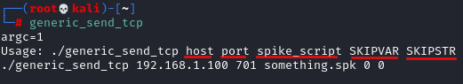
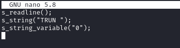
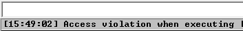
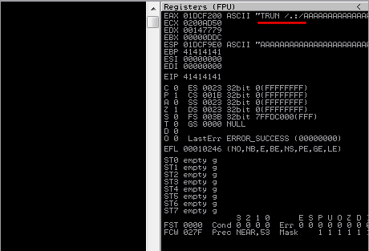
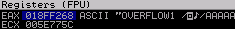

Spiking
How we can know which of these command is vulnerable?
We nee to do
spiking. This mean take every command one at a time (in this example STATS,RTIME,LTIME,...) and send a bunch of characters to see which command is vulnerable by crashing it.
Spiking the service with "generic_send_tcp"As demonstration we can use a script: "generic_send_tcp"
 As spike script(command.spk) we can use something like:
s_readline();
s_string("[COMMAND] ");
s_string_variable("0");
Spike for example the command TRUN
generic_send_tcp [address] [port] command.spk 0 0
From Immunity we can see that the command is vulnerable since there is been an
access violation   ◇ EAX → contain the command that we have sent to the server and that go in the Buffer Space
▪ note that in in this example start with “TRUN
/.:/”, This is been added by the Server Service.
We will need to use
/.:/ also during the phase of fuzzing
Strange characters:
 We can follow the register in the stack and check which characters are these